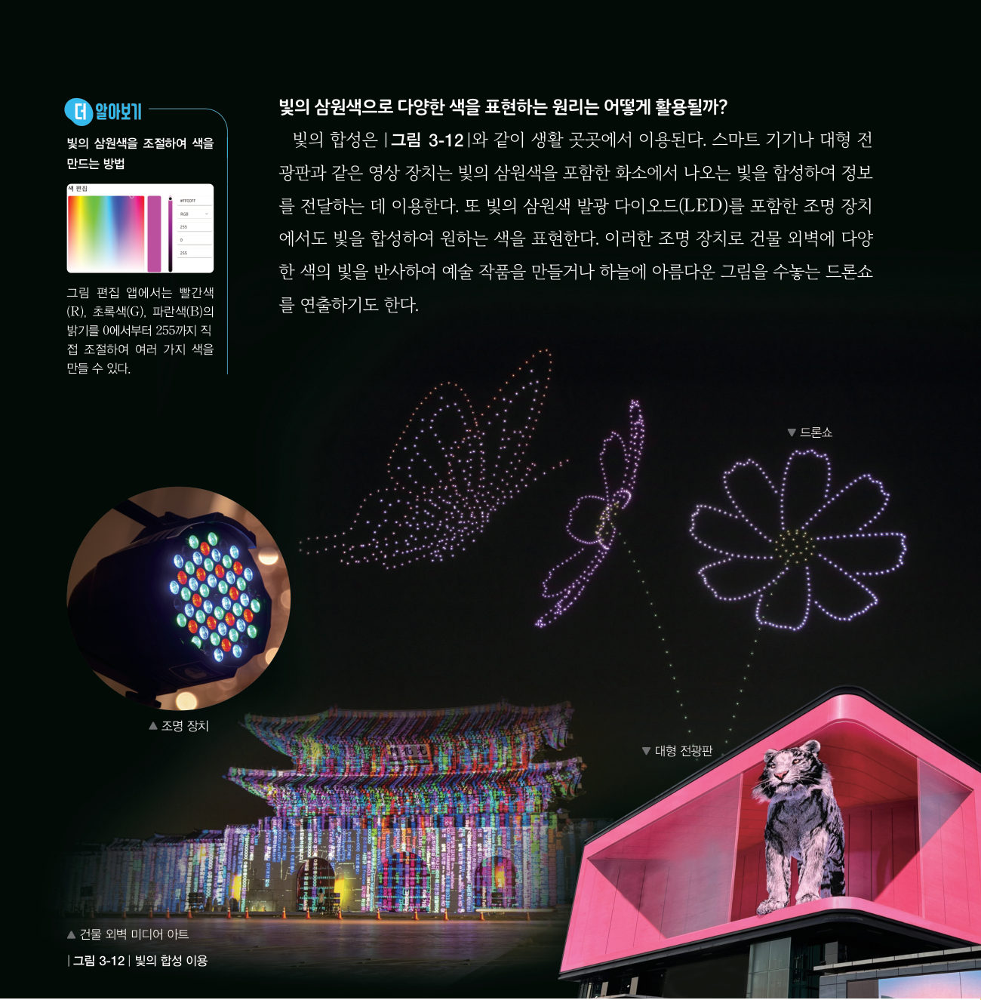

RGB LED의 빨간색·초록색·파란색 밝기를 웹 슬라이더로 조절해 흰 종이 위에서 빛을 섞어 보자. 영상 장치의 화소가 수많은 색을 만드는 방법을 직접 확인하는 실험이에요.
준비물 아두이노 UNO, USB 케이블, RGB LED 모듈(공통 음극, 37종 키트) 또는 RGB LED + 220 Ω 저항 3개, 점퍼선 4개, 흰 종이(또는 반투명 컵·탁구공 디퓨저), 어두운 상자, 노트북(크롬)
| 부품 | 부품 핀 | 아두이노 핀 |
|---|---|---|
| RGB LED | R | 9번 (~PWM) |
| G | 10번 (~PWM) | |
| B | 11번 (~PWM) | |
| - (공통) | GND |
코드를 불러오는 중…
| 평가 기준 | 스스로 평가 |
|---|---|
| 회로를 바르게 연결하고 RGB 값을 바꾸며 빛의 합성을 관찰했다. | |
| 관찰 결과를 영상 장치의 원리와 연결해 설명했다. | |
| 모둠원과 역할을 나누어 협력했다. |